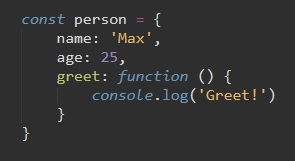
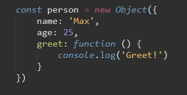
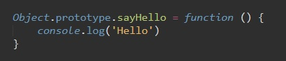
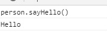
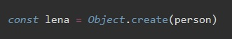

Рассмотрим код
Объект person является дочерним объектом рдительского объекта Object и наследует все его свойства и мметоды. Object - является прототипом для person
Точно так же можно было объявить объект person так:
Теперь рассмотрим такой код:
C помощью метода prototype мы обращаемся к объекту Object (к прототипу) и дописываем в него новый метод. После этого, все дочерние объекты прототипа Object наследуют этот метод. Так как объект Object является прототипом для нашего объекта person то мы можем в консоли вызвать метод sayHello у объекта person.
В метод create мы можем передать объект, которыйв последствии будет прототипом для необходимого объекта.
Рассмотрим код:
т.е. для объекта lena прототипом будет person, а это значит что лена наследует все его свойства и методы. т.е. в консоли можно вызвать метод greet